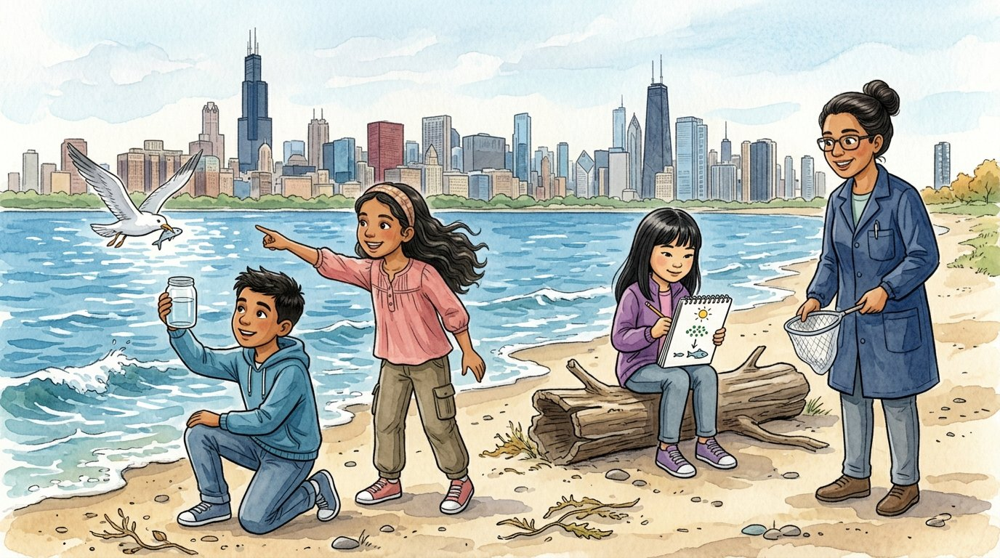

Grade 6 · Science · MS-LS2-3
Who eats whom in the lake
A story about how energy flows and matter cycles in the Lake Michigan ecosystem.
Quién se come a quién en el lago. Un cuento sobre cómo fluye la energía y circula la materia en el ecosistema del lago Michigan.
Science words you will learn
Tap a green word to see what it means.
Toca una palabra verde para ver qué significa. Con la ayuda activada, verás también la definición en español.
The story
El cuento está en inglés. Pulsa «Listen to the story» para escucharlo y toca las palabras verdes cuando no entiendas una.
On the field trip to the lakefront, Ms. Rivera dipped a jar into Lake Michigan and handed it to Israel. "What do you see?" "Water," said Israel. "Just water." "Look closer," she said, giving him a magnifying glass. Tiny green specks, clumps of phytoplankton, floated in the jar, and even tinier creatures twitched between them.
"The green specks are phytoplankton," said Ms. Rivera. "They're . Like plants, they use sunlight to make their own food. Almost all the energy in this lake starts with the Sun and enters through them." "And the twitchy ones?" asked Israel. "Zooplankton. Tiny animals that eat the phytoplankton."
Just then, a seagull swooped down and came up with a small silver fish. "That's an alewife," said Ms. Rivera. "Alewives eat zooplankton. Bigger fish, like salmon, eat alewives, and gulls eat small fish too." "Those are all ," said Selena. "They get their energy by eating other living things."
Sophia drew arrows in her notebook: sun, phytoplankton, zooplankton, alewife, salmon. Then she added the gull, and more arrows, until the page looked like a spider web. "It's not a straight chain," she said. "Everything is connected to more than one thing. It's a ."
"Here's a puzzle," said Ms. Rivera. "Does the energy go around in a circle?" Sophia looked at her arrows. "Look closely," said Ms. Rivera. "At every step, living things use most of the energy to move, grow and stay warm, and it escapes as heat. So energy flows one way, from the Sun through the web. That's why there are fewer big fish than tiny plankton."
Selena found a dead fish on the sand, with flies buzzing around it. "Gross," she said. "Not gross. Important," said Ms. Rivera. ", like bacteria and fungi, break it down. The atoms in that fish go back into the water and the soil, and producers use them again. Matter isn't lost. It goes around in a ."
"So energy flows through, and matter goes around," said Israel. "Exactly," said Ms. Rivera. "The sunlight, the water, the air and the living things together make one . Change one part, and the whole web feels it."
On the bus back to school, Sophia finished her food web. She added one more box at the very top, with an arrow from the salmon. "Who's that?" asked Selena. "Me," said Sophia. "My mom made salmon tacos last night. I'm part of the web too."
Glossary
- producer
- A living thing that makes its own food from sunlight, like a plant or phytoplankton.
- productor: Un ser vivo que fabrica su propio alimento con la luz del sol, como una planta o el fitoplancton.
- consumer
- A living thing that gets energy by eating other living things.
- consumidor: Un ser vivo que obtiene energía al comer otros seres vivos.
- decomposer
- A living thing, like bacteria or fungi, that breaks down dead plants and animals.
- descomponedor: Un ser vivo, como las bacterias o los hongos, que descompone plantas y animales muertos.
- food web
- A model that shows how the food chains in an ecosystem connect.
- red alimentaria: Un modelo que muestra cómo se conectan las cadenas alimentarias de un ecosistema.
- ecosystem
- All the living things in an area together with the nonliving things, like water, sunlight and air.
- ecosistema: Todos los seres vivos de un lugar junto con lo que no tiene vida, como el agua, la luz del sol y el aire.
- matter cycle
- The way the same atoms are used again and again, moving between living and nonliving things.
- ciclo de la materia: La manera en que los mismos átomos se usan una y otra vez, pasando entre los seres vivos y lo que no tiene vida.
Questions
Choose the correct answer. If you make a mistake, the story shows you where the answer is.
Elige la respuesta correcta. Si te equivocas, el cuento te muestra dónde está la respuesta.
-
Question A. Where does almost all the energy in the lake ecosystem start?
¿Dónde empieza casi toda la energía del ecosistema del lago?
Almost all the energy starts with the Sun and enters the lake through producers like phytoplankton.
-
Question B. Why are the alewife, the salmon and the gull consumers?
¿Por qué la alosa (alewife), el salmón y la gaviota son consumidores?
Consumers get their energy by eating other living things.
-
Question C. Why did Sophia call her drawing a food web instead of a chain?
¿Por qué Sophia llamó red alimentaria a su dibujo y no cadena?
It wasn't a straight chain: everything was connected to more than one thing.
-
Question D. Why doesn't energy go around in a circle?
¿Por qué la energía no da vueltas en círculo?
At every step, living things use most of the energy and it escapes as heat, so energy flows one way.
-
Question E. What do decomposers do with a dead fish?
¿Qué hacen los descomponedores con un pez muerto?
Decomposers break it down, and its atoms go back into the water and soil, where producers use them again.
Challenge: explain your thinking
Develop a model
Draw a food web for a Chicago park with at least five living things (for example: grass, oak tree, squirrel, caterpillar, robin, hawk, mushroom). Use one color of arrows for energy and another color to show how matter cycles back.
Elabora un modelo. Dibuja una red alimentaria de un parque de Chicago con al menos cinco seres vivos (por ejemplo: pasto, roble, ardilla, oruga, petirrojo, halcón, hongo). Usa flechas de un color para la energía y de otro color para mostrar cómo vuelve a circular la materia.
Answer in your notebook or talk it over with a classmate. Use evidence from the story.
Responde en tu cuaderno o coméntalo con un compañero. Usa evidencia del cuento.
Check your thinking
Energy arrows go one way: Sun → grass and oak (producers) → caterpillar and squirrel; caterpillar → robin; robin and squirrel → hawk. Matter arrows go back around: when plants and animals die, decomposers like mushrooms and bacteria break them down, and their matter returns to the soil and air, where the producers use it again.